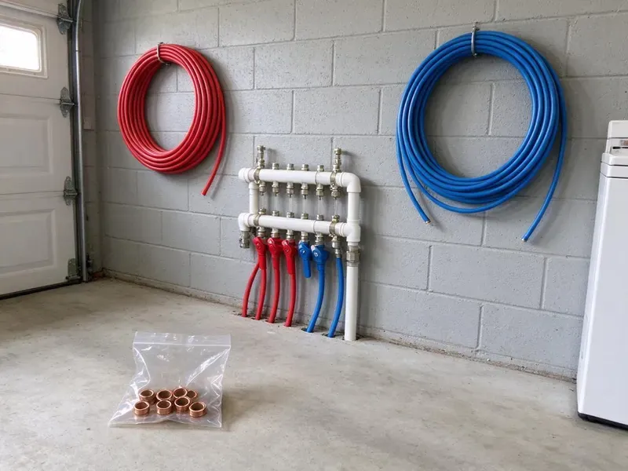

Backflow Preventer Installation in Mandan, ND
Certified plumbers at HPN Plumbing install and test backflow preventers in Mandan, ND, often in a single trip.
- Install and Test in One Visit
- Certified Testers
- Fast Installs
- Local Crews

Guard Your Water Supply in Mandan, ND
Homes and businesses, we install, test and file the report.
Certified Backflow Installers in Mandan, ND
Water providers with cross-connection programs require annual testing, and HPN Plumbing works with them every week. We install RPZs, double checks and PVBs to manufacturer specs, submit the test results to the provider, and remind you when next year's test comes due. No overdue notices.
Work we handle every week:
- Insulated enclosures and freeze protection
- Initial certification testing and provider paperwork
- Reduced pressure zone (RPZ) installation

Additional Plumbing Installation Services in Mandan, ND
We install water heaters, pumps, lines, and fixtures across Mandan, ND with careful, permitted work that passes inspection the first time.


Customers
Why Choose HPN Plumbing for Backflow Preventer Installation in Mandan, ND?
Backflow devices are safety equipment, built to keep contaminated water out of your clean lines. Our installs use quality brass from well-known makers, with isolation valves on both sides, so testing and repair can happen without shutting down the whole building for an afternoon in Mandan. Shutdowns stay short.
- Property Protection, Stopping backflow keeps contamination out of every fixture and avoids costly cleanup.
- Hazard Matched, The device fits the actual hazard, health or pollution.
- Water Safety, A backflow device stops dirty water from flowing back into the clean side.
Citywide Coverage
Every neighborhood in Mandan is in our service area for backflow installs. The same crew handles downtown shops and suburban houses, and that crew knows the device the local provider expects on irrigation, fire lines and commercial mains. One visit covers most jobs.
Experienced Team
The team has installed devices on sprinkler systems, commercial kitchens, car washes and fire lines. Tight mechanical rooms do not slow them down, keeping test cocks accessible and the relief port pointed at a drain instead of a wall. Access matters for every future test.
Safety-First Approach
Cross-connection problems often hide in the building, not at the meter. We check boilers and process lines, because a containment device at the meter protects the public supply but does nothing for the people drinking from fixtures inside your own building in Mandan. Isolation devices cover that.
Trusted Certified Mandan Plumbing Services Professionals
At HPN Plumbing, we are proud to offer certified plumbing services throughout Mandan, ND. Credentials matter in this trade. Our plumbers hold recognized industry credentials, and they follow strict safety and quality rules on every repair, installation and maintenance call we run.
Call Us Now PHCC Plumbing Contractor Recognition
PHCC Plumbing Contractor Recognition Better Business Bureau (BBB) Accreditation
Better Business Bureau (BBB) Accreditation Angi Certified Pro
Angi Certified Pro ISO 9001 Quality Management Certification
ISO 9001 Quality Management CertificationThe Backflow Work We Do in Mandan, ND
Backflow Testing and Certification in Mandan
Testable assemblies need certification at install and usually once a year after that. Our certified testers check each check valve and the relief valve, record the differential pressure, and repair or rebuild a failing device on the spot with genuine parts so you avoid a compliance letter in Mandan. The report goes to your provider.

Backflow Prevention for Irrigation Systems in Mandan, ND
Sprinkler heads sit in fertilizer and standing water, and a pressure drop on the main can siphon that water back into the house. On most homes, a pressure vacuum breaker handles the back-siphonage risk, and we mount it at least 12 inches above the highest sprinkler head so it can do its job in Mandan, ND. Height is the code detail people miss.
Reduced Pressure Zone (RPZ) Device Installation in Mandan, ND
High-hazard connections in Mandan, ND call for a reduced pressure zone assembly. Think chemical injection or medical equipment, where a backflow event could put something toxic in the supply, so the RPZ adds a relief valve between two checks that dumps water if either check leaks. We plan for the discharge.
Commercial Backflow Preventer Installation in Mandan
Soda machines and boilers each create a cross-connection inside a business. We survey the building and list each one, install containment at the meter and isolation devices at each hazard, and give you documentation for every device for your records and for your water provider in Mandan. We schedule around your hours.
Commercial Backflow Prevention Systems in Mandan, ND
Commercial buildings in Mandan, ND usually need containment at the meter and isolation devices inside. We survey every cross-connection in the building, from the boiler makeup line to the dish machine, then install the assemblies the water provider calls for and schedule the work around your business hours. Weekend installs are available.
Emergency Backflow Preventer Repair in Mandan
Water spraying from the relief valve or a cracked body after a freeze needs fast attention. The same day, we shut it down and look it over, then rebuild it if the body is sound or replace it if it is not, so your home or business in Mandan stays protected and compliant. Most failures are fixable.
Emergency Backflow Preventer Replacement in Mandan
A failed backflow device can mean a compliance letter or a shutoff notice. We pull the bad unit and set a new one, usually the same day in Mandan, with unions on both sides so the next repair is a quick swap instead of a cut-and-solder job on a cold morning. We certify it on the spot.

Code-Compliant Backflow Installation in Mandan, ND
Inspections are a normal part of permitted jobs, and HPN Plumbing handles the permit process so the work follows code. Backflow rules vary by water provider, so the device that passes in one town may not pass the next one over. The requirement gets checked before any assembly gets ordered, then pull the permit, install at the right height and orientation, and book the inspection in Mandan, ND. Rework costs more than planning.
Backflow Preventer Installation Near Me in Mandan, ND
Searching for backflow preventer installation near me in Mandan, ND? We know the local providers and what they require, which means we can usually tell from your notice which device you need before we even get to the property. It saves a visit.
A local plumber who knows the regulations saves you a failed inspection. Every install meets state and local code, and we pick the device the provider actually requires rather than the one that happens to be on the truck in Mandan, ND. We send the report.
HPN Plumbing at a Glance
- Fully licensed plumbing team covering Mandan, ND
- Same-day appointments and 24/7 emergency response
- Upfront, flat-rate pricing before work begins
- 4.9-star rated by 408+ North Dakota customers
Mandan Map
Mandan Information
- Population
- 24,586
- Area codes
- Local
- Service area
- Mandan and towns within a 40 mile drive
- Nearby
- Bismarck, Dickinson, Minot, Jamestown
A backflow preventer in Mandan, ND stops irrigation and process water from reversing into the clean supply when pressure drops.
Expert Services
Call HPN Plumbing for honest, reliable plumbing from people who know the trade in Mandan, ND.
Our Specialized Plumbing Services in Mandan, ND
At HPN Plumbing, we handle the full list of plumbing services across Mandan, ND. From leak detection to full system installs, our team works fast and charges fair prices on homes and commercial properties alike. Take a look at our core services below:


What a Backflow Install Looks Like in Mandan, ND
Here is how we go from your first call to a certified, documented backflow assembly.
Request a Quote
Call (701) 403-1348 or use the website and tell us what the device protects. We collect the basics about your property.
On-Site Assessment
A licensed plumber visits your Mandan property, locates the cross-connections and picks the device type and size local code requires.
Professional Installation
We install the assembly with unions and isolation valves, set at the right height, then test it to manufacturer specs.
Frequently Asked Questions About Backflow Preventer Installation in Mandan
Residential PVBs usually cost $250 to $700 installed. For bigger homes and businesses, double checks and RPZs run $800 to $3,500 and up, depending on size and whether you need an enclosure.
Our usual brands are Watts, Febco, Zurn and Apollo. All of them meet the standards water providers require, and testers in most areas know them well, which makes the annual test faster and repairs cheaper. Familiar parts save money.
Water running from the relief valve on an RPZ is the clearest sign. Low downstream pressure and visible leaks are others, and discolored or foul-smelling water means you should call for an inspection in Mandan the same day. Do not wait on bad water.
Watts, Febco, Wilkins by Zurn and Apollo assemblies. Repair kits for each are easy to get, which keeps future service affordable.
It depends on the hazard and the local rules. Most irrigation uses a PVB or a double check, while commercial kitchens and chemical injection require an RPZ.
Our backflow installs carry a warranty on labor and the installed device. You will find the details on your quote, along with the manufacturer's coverage, which differs between models and sizes and which we explain before you choose. We can compare warranties for you.
Usually, yes, especially on systems tied to the municipal supply. We pull the permit and book the inspection, and we make sure the device passes before the provider's deadline in Mandan. The fee is in the quote.
Annual testing by a certified tester is the norm in Mandan. Testing is separate from installation, but it keeps the device certified and keeps your account compliant, so we offer reminders and can schedule the test on the same visit as any repair. We can combine the visits.
What People Are Saying About Our Plumbing Experts?

Monica A.
Our water bill nearly doubled in one month with no change in how we used water. The tech checked the meter, heard the leak under the hallway with his equipment, and opened a hole about a foot square. Fixed the same day.
Slab Leak Repair · Bismarck, ND
Nathan E.
Our tankless heater kept throwing an error code and shutting off mid shower. The tech flushed the heat exchanger, which was full of scale, and replaced a bad flow sensor. Hot water has been steady for half a year now.
Water Heater Repair · Jamestown, ND
Rachel N.
Hard water was leaving white crust on every faucet and our dishwasher was struggling. The tech tested the water, recommended a softener sized for a family of five, and installed it with a bypass valve in one afternoon. The spots on our glasses are gone.
Water Softener · Bismarck, NDTyler J.
We bought a taller comfort height toilet for my dad, who just had knee surgery. The plumber pulled the old one, found the flange was cracked, and replaced it before setting the new bowl. Took about two hours.
Toilet Installation · Minot, NDCarlos V.
Our house still had galvanized pipe, and upstairs the shower was a trickle. The crew repiped everything in PEX over three days and patched every drywall hole before they left. The pressure difference is night and day.
Repiping · Bismarck, NDEmily R.
The shutoff valve under our kitchen sink snapped off in my hand on a Sunday morning. HPN Plumbing had someone out by early afternoon. He replaced both angle stops with quarter turn valves and showed me where our main shutoff was, which I honestly did not know.
Plumbing Repair · Dickinson, ND